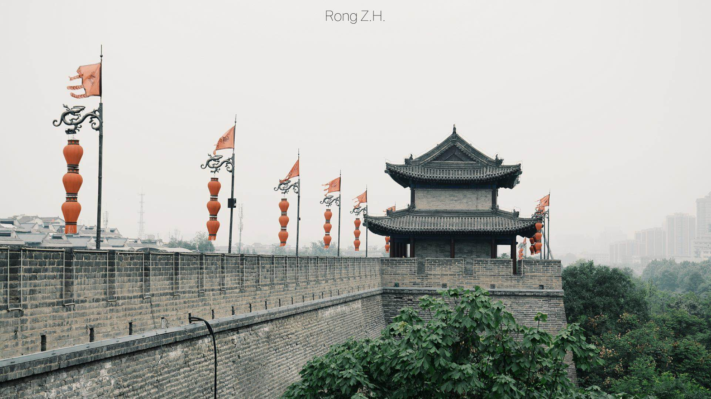

这段往事，就像康桥上的一片云彩。无声息地到来，又离去，没有多少人旁观，也不轰轰烈烈。它好像很遥远，让人以为那是很久以前尚天真的自己所为；它又似乎很近，一切的结束仿佛就在昨天。
我说不清自己对这段经历究竟抱着一份怎样的惆怅，只是每当想起，便会深深惘然。
你在长安城里数着星星，我在城墙下听着你们的歌。一个毫不经意的凝望，竟可以让地覆天翻。你是你，被盘活了我记忆中无数次出现的你；我却不再是我——有些东西已经不可阻止地改变。
一次研学，在我心中，从此是一座城，与一个人……
西安，从此不止历史与神话。
这是一瓶太阳的馈赠，里面藏着一米阳光。让人钦佩的大人物，原来也会这般寒凉——我觉得，你应该拥有一束不灭的温暖。
把它交给你时，我希望它能带给你快乐，驱散你的阴霾，让阳光永远住在你心里。
因为，你快乐，我就的天空也就晴朗了。
——“我想要民大秋天的枫树叶子。”
——“没问题！静候秋天到来。”
——“…………”
秋天里的我在等待一树红枫，却偏偏遇见了一个不懂时令与物候变化的你。秋天的枫叶，就快第二次张丹掖彩。彼时，湖心岛上陪訾小姐看枫叶的你，是否会记得那片缺席了的枫叶？
因为你会感动，所以会被你感动，因此也想感动你。
很冷的天，杜鹃却开得热烈。希望收到花的你，会知道，Jonathan的杜鹃花是常开不败的。你多像英语阅读上那个叫Jonathan的男孩啊